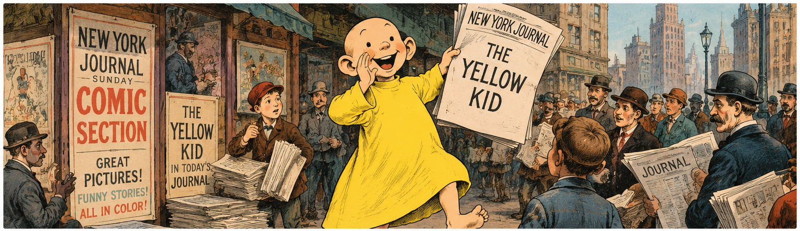
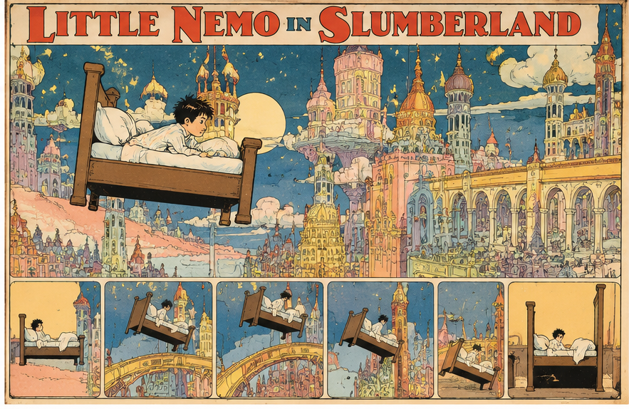
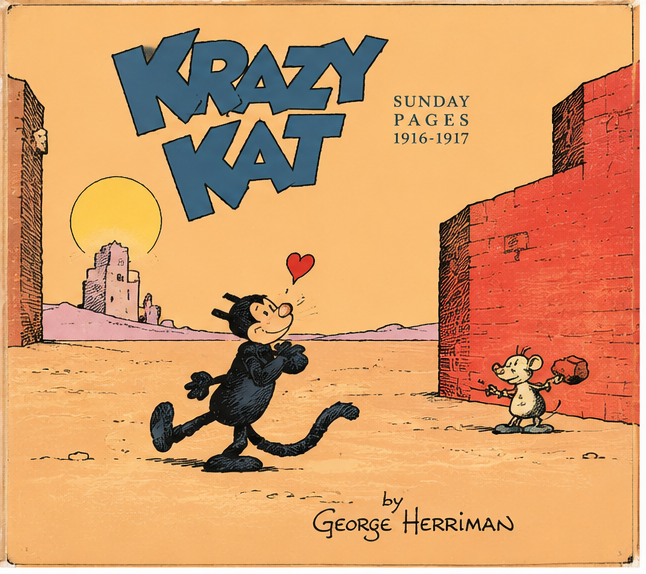

¿Cómo nació el cómic?
Una aventura que comenzó en los periódicos
Imagina Nueva York hace más de cien años. Es domingo. Los vendedores anuncian a voces los periódicos y las familias esperan sus páginas ilustradas. Entre noticias y anuncios aparecen personajes que hacen reír, sorprenden y regresan cada semana.
En aquellos años, los periódicos se compraban en quioscos y puestos callejeros, y los grandes diarios competían por conquistar lectores. Las ediciones dominicales ofrecían suplementos especiales, cada vez más vistosos, con ilustraciones y páginas a todo color.
Para muchos lectores, las historietas eran una razón más para elegir un periódico. Los personajes empezaron a convertirse en auténticas estrellas.
El domingo, día de historietas
Las nuevas técnicas de impresión permitían publicar dibujos coloreados a gran tamaño. Padres, madres e hijos podían disfrutar de las aventuras en una misma hoja de periódico. Y había algo que invitaba a volver al domingo siguiente: reencontrarse con los personajes favoritos.
El cómic no nació en un día ni tuvo un único inventor. Pero la prensa de finales del siglo XIX ayudó decisivamente a dar forma al cómic moderno.
Una rivalidad histórica
La guerra por un niño amarillo
Joseph Pulitzer, dueño del New York World, y William Randolph Hearst, propietario del New York Journal, competían ferozmente por vender más periódicos. Buscaban grandes titulares, novedades y dibujantes capaces de atraer a los lectores.
En 1895 empezó a hacerse popular The Yellow Kid, un niño de cabeza rapada y camisón amarillo creado por Richard F. Outcault. Sus escenas mostraban, con humor, la vida de los barrios populares de Nueva York.
El personaje tuvo tanto éxito que en 1896 Hearst contrató a Outcault para su periódico. Pulitzer no quiso perder a su estrella y encargó a otro dibujante, George Luks, que continuara con el personaje. ¡Durante un tiempo hubo dos Yellow Kid rivales!
Aquella disputa se relaciona con el origen de la expresión «prensa amarilla», que terminó designando un periodismo sensacionalista, mucho más allá de las historietas.
Los editores habían descubierto algo fundamental: un personaje de cómic podía ayudar a vender periódicos. La historieta ya no era solo un dibujo divertido; también era un fenómeno comercial.

Tres pioneros inolvidables
1895 · THE YELLOW KID
Richard F. Outcault
Con su camisón amarillo, este niño travieso se convirtió en uno de los primeros personajes de historieta con gran popularidad comercial. Su éxito muestra la estrecha relación entre cómic y prensa.
1905 · LITTLE NEMO IN SLUMBERLAND
Winsor McCay
Cada domingo, Nemo viajaba a mundos imposibles mientras soñaba. Sus viñetas cambiaban de tamaño, los edificios se transformaban y el color convertía la página en un espectáculo. Al final, Nemo solía despertar.

1913 · KRAZY KAT
George Herriman
Un gato enamorado, un ratón que le lanza ladrillos y un policía que intenta poner orden. Con ese juego de personajes, Herriman creó historias llenas de humor, ternura y poesía. Sus páginas dominicales experimentaron con la composición y el paisaje.

De aquellos domingos a nuestros días
De las páginas de periódico surgió un lenguaje capaz de contar aventuras, provocar emociones y crear mundos enteros. Después llegarían los álbumes, los superhéroes, el manga y la novela gráfica.